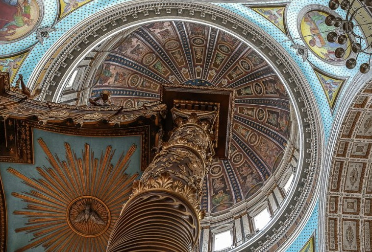
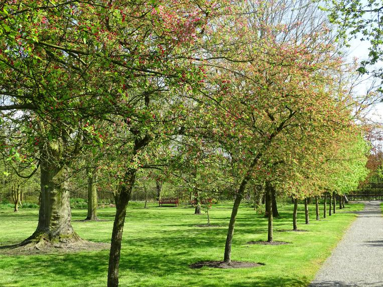

Oudenbosch
Feiten over Oudenbosch:
- gelegen in provincie Noord-Brabant
- onderdeel van gemeente Halderberge
- ca. 13.500 inwoners
- oppervlakte: 22.44 km2
- bereikbaar per trein, boot, weg
Basiliek
 Fusce at fringilla diam. Quisque eros erat, convallis eget erat et, faucibus fermentum magna. Integer consectetur enim auctor iaculis volutpat. Aenean cursus ligula in mauris placerat, vel accumsan nisi porta. Cras laoreet, massa ut vehicula iaculis, odio neque pretium eros, et ultricies arcu urna nec sem. Duis condimentum enim in neque luctus congue cursus eget nisi. Phasellus ante nulla, imperdiet ac mi ac, condimentum euismod lectus. Praesent ut purus vel urna ultricies ultrices lacinia ac nibh. Quisque eget sem id erat vestibulum malesuada eget nec erat. Suspendisse accumsan rhoncus vulputate. Proin vitae lorem sit amet urna rutrum sodales. Sed sed dolor placerat, feugiat arcu ut, scelerisque sem. In sollicitudin ac ex non volutpat. Cras quis bibendum nisl, eu eleifend mi. Nunc et mauris at nunc viverra rhoncus eleifend at elit. Nam ac porta velit. Vivamus urna lorem, tincidunt vitae nisl ut, sodales.
Arboretum
 Mauris eget mattis massa. Maecenas pulvinar vitae ex id congue. Duis id tellus tincidunt, tincidunt magna non, egestas arcu. Maecenas iaculis, velit nec vestibulum faucibus, felis ligula sodales mi, ut gravida ante diam at mi. Sed sed dolor placerat, feugiat arcu ut, scelerisque sem. In sollicitudin ac ex non volutpat. Cras quis bibendum nisl, eu eleifend mi. Nunc et mauris at nunc viverra rhoncus eleifend at elit. Nam ac porta velit. Vivamus urna lorem, tincidunt vitae nisl ut, sodales. Integer consectetur enim auctor iaculis volutpat. Aenean cursus ligula in mauris placerat, vel accumsan nisi porta. Cras laoreet, massa ut vehicula iaculis, odio neque pretium eros, et ultricies arcu urna nec sem. Duis condimentum enim in neque luctus congue cursus eget nisi. Phasellus ante nulla, imperdiet ac mi ac, condimentum euismod lectus. Praesent ut purus vel urna ultricies ultrices lacinia ac nibh. Quisque eget sem id erat vestibulum malesuada eget nec erat.